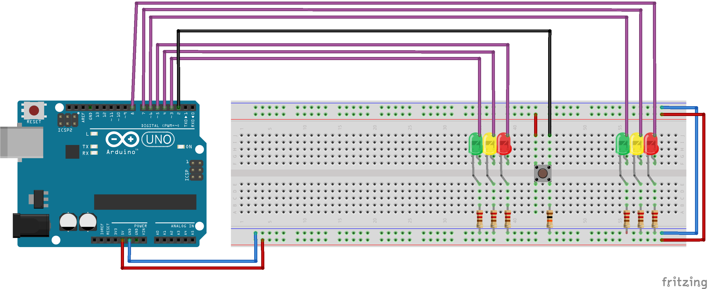

Worksheet Exercises
- rotateLEDs
Task
We will write a program that will do the following:- starts by turning on
LED0 - once very second, shifts the LED to the right, wrapping around
if necessary (e.g. after one second only
LED1is on, after 2 seconds onlyLED2is on, etc.) - if
RESETis pressed, restarts the cycle, turningLED0on and all others off
Hardware Setup
We need two switches and three LEDs. For the switches, we can use either DIP switches, or push-buttons. The following schematic uses DIP switches.
 Fritzing schematic: apsc160_rotateLEDs.fzz| Component | Count |
|---|---|
| Full Size Breadboard | 1 |
| Tactile Switch | 1 |
| LEDs (5 mm Round, Various) | 6 |
| 220 Ohm Resistor | 6 |
| 10 kOhm Resistor | 1 |